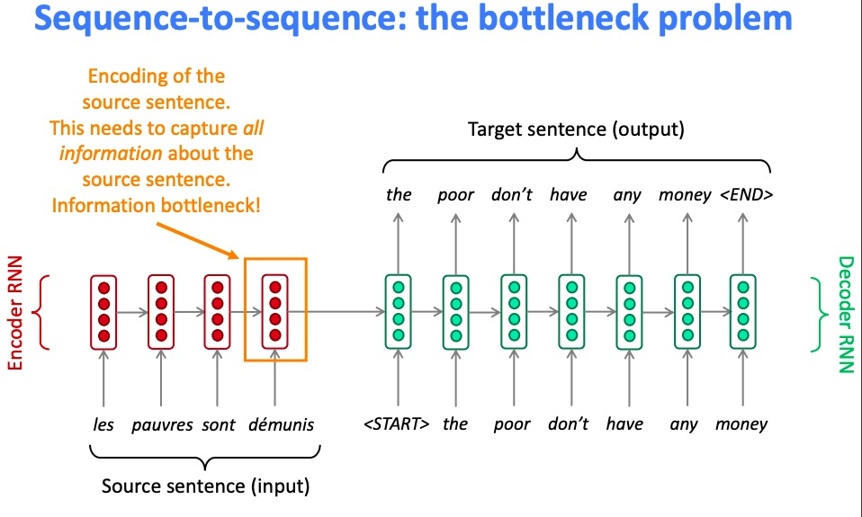
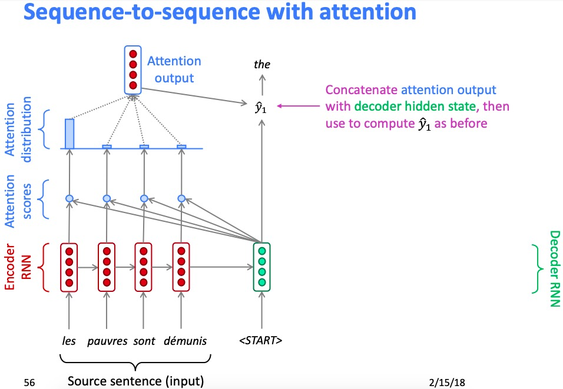
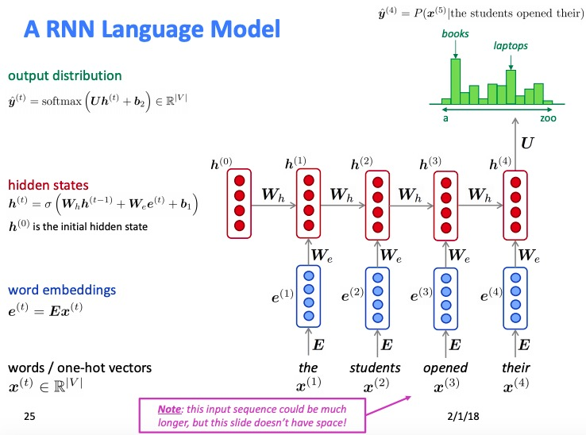

如果按照时间顺序来讲，谷歌的Seq2Seq之后另一个非常大的进展就是Attention机制了，一时间各种Attention层出不穷，这里我按照自己的理解写一写Attention 机制。除此之外，Attention也是另外一个重大突破:Transformer的基础，希望大家能够认真理解精髓。
Attention的Motivation
在Seq2Seq模型提出之后，Machine Translation性能得到了一个飞跃，NMT也被认为是MT的基本方法，一切看起来都很美好，但是问题仍然存在:
制约瓶颈(Bottleneck): encoder 的最后一个隐向量的表示性能
参加下图: 图片来自于Stanford CS224N lecture 10 slides

由此可见，Encoder的最后一个隐向量需要表达的信息量很大，后续Decoder的decode过程都严重依赖于这一个隐向量。而拿Machine Translation 举例:
1 | I like eating oranges . |
显然， 在翻译时，“我” 需要更多关注“I”， “吃” 需要更多关注“eating”。这个motivation 就启发了Attention 的诞生。
Seq2Seq模型中Attention的具体实现
放一张Stanford CS224N lecture 10 slides 对于Attention的理解，很清晰
attention mechanism first units
对这个图的解读如下,从下往上
- RNN(LSTM,GRU) 组成的Encoder的hidden state: $e_1, \dots, e_N \in R^h$
- On timestep $t$, decoder的hidden state 是$d_t$
- Attention Score的计算:
$$s^t = d^T_t \cdot e_1, d^T_t \cdot e_2, \dots, d^T_t \cdot e_N$$ - 有Attentions score 转化为attention distribution:
$$\alpha^t = softmax(s^t) \in R^N$$ - Attention的输出
$$o^t = \sum_{i=1}^{N} \alpha^t_i h_i \in R^h$$ - Attention的输出与Decoder 的隐状态拼接$$[o^t; d^t] \in R^{2h}$$ 得到向量与$U$($U \in R^{\vert V \vert * 2h}$)进行线性网络层,后续在进行Softmax得到在整个词典上的概率分布. 其实后续都是和Seq2Seq 中的RNN 结构是一样的，只是现在$U$ 扩大了，而且现在Decoder的RNN的下一个序列是由当前隐状态和一个attention输出拼接而成的。
RNN LM
Attention的泛化
这里之所以讲Attention的泛化在于会极大的促进对Attention Is All You Need 也就是Transformer的理解。
这里先引用摘自Attention Is All You Need 的论文一段论述:
An attention function can be described as mapping a query and a set of key-value pairs to an output, where the query, keys, values, and output are all vectors. The output is computed as a weighted sum of the values, where the weight assigned to each value is computed by a compatibility function of the query with the corresponding key.
$$Attention(Q,K,V) = softmax(QK^T)V$$
这里列出各个项维度
- $Q$: 代表query, $Q \in R^{1 * d_{KQ}}$
- $K$: 代表key, $K \in R^{N * d_{KQ}}$
- $V$: 代表value, $V \in R^{N * d_v}$
在Seq2Seq的Attention 中, query为decoder的隐状态$d^t$, key为encoder的各个隐向量，value同key也是encoder的各个隐向量。